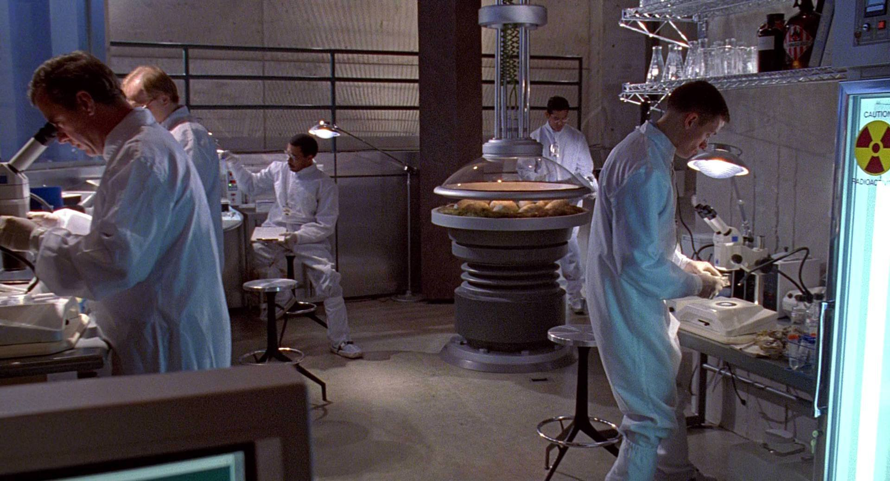
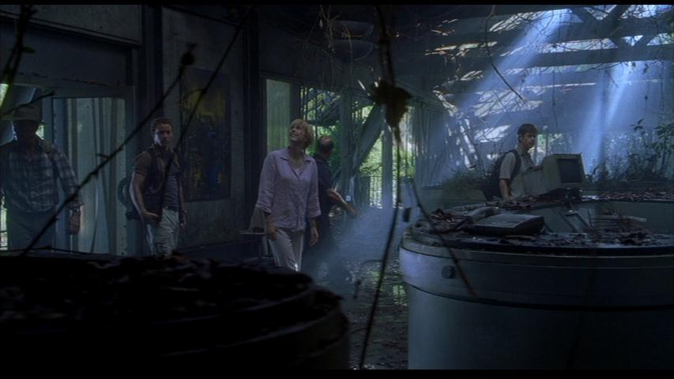
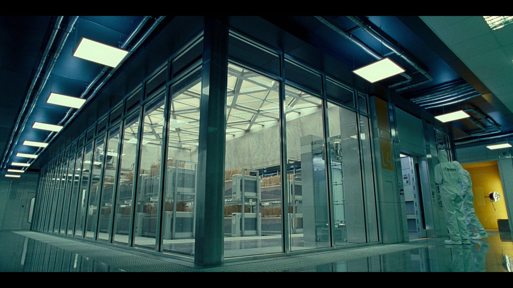
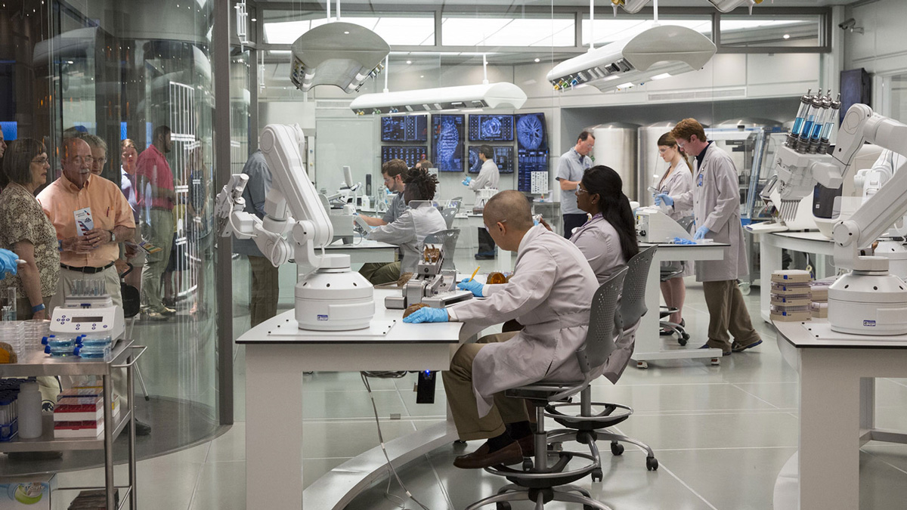

1. The Original Jurassic Park Lab
Located on Isla Nublar, this was where the magic of dinosaur cloning began. InGen's high-tech lab allowed for the creation of cloned dinosaurs from ancient DNA, leading to the rise and fall of Jurassic Park.
2. The InGen Labs on Isla Sorna
On Isla Sorna, InGen continued their dangerous experiments. The lab facilities were shrouded in secrecy, and the genetics department was responsible for creating genetically engineered hybrid dinosaurs and other dangerous species.
3. The Lockwood Manor Lab
In *Jurassic World: Fallen Kingdom*, the Lockwood Manor lab became a hub for illegal dinosaur trafficking. Created to breed and auction off dinosaurs, this lab represents the darker side of genetic manipulation in the franchise.

4. The Sanctuary Lab (Jurassic World: Dominion)
In *Dominion*, the Sanctuary Lab is where cloned dinosaurs were supposedly safe. It served as a research facility, and its controversial role was central to the unfolding events in the final chapter of the Jurassic World saga.
5. The Masrani Global Labs
Masrani Global, the parent company behind Jurassic World, had their own cutting-edge labs responsible for creating genetically modified dinosaurs like the Indominus rex. These labs showcased how the franchise's genetic experimentation was taken to dangerous extremes.
